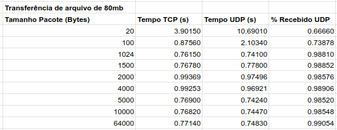
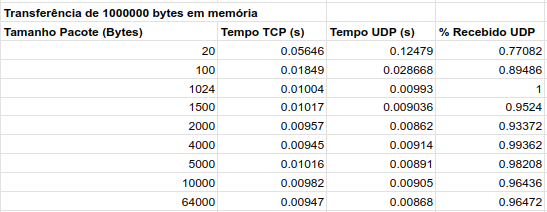
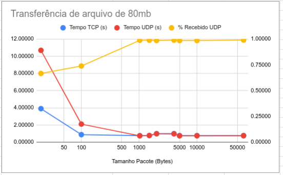
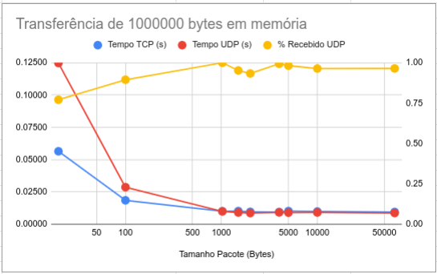

Repositório
Repositório: link do repositório gitCódigo Fonte
TCP: cliente serverUDP: cliente server
Logs
Diretorios dos arquivos de log:Trasferência de dados de memória: dir cliente dir servidor
Trasferência de dados de arquivo: dir cliente dir servidor
exemplo de arquivo de log
Relatório
Relatório: relatario.md.txtDescrição
Este trabalho tem como objetivo comparar o desempenho dos protocolos TCP e UDP. Para isso, foram consideradas as metricas de tempo de recebimento e perda de dados na transferencia de arquivos e transferencia em memória principal entre servidor e cliente.
Os programas de teste foram implementados em python utilizando as bibliotecas:
Executando o trabalho
Para executar o trabalho com conexão TCP são utilzados os arquivos cliente_tcp.py e server_tcp.py. Para a conexão UDP são utilizados os arquivos cliente_udp.py e server_udp.py.
O server pode ser executado com o seguinte comando:
Em que:
E o cliente pode ser executado com o seguinte comando:
Em que:
Exemplo para server executando na máquina i29, porta 8000 do dinf
Server:
Cliente para tranferência de arquivo:
Cliente para tranferência de dados em memória:
Testes para os protocolos
 
Para testar os protocolos TCP e UDP foram realizado testes feitos para comparar a transfêrencia de um arquivo de 80MB e transfêrencia de dados em memória principal de 100MB. Os testes foram feitos com o tamanho de pacotes diversos em bytes: 64k, 10k, 5k, 1500, 1024, 100 e 20. Para cada tamanho de pacote, foi realizado 5 execuções e foi feita uma média entre elas para calcular o tempo de recebimento cliente TCP, tempo de recebimento cliente UDP e a porcentagem de pacotes recebidos em relação ao total do cliente UDP.
 No primeiro momento é visível que em todos os casos, a transferência em memória principal é bem mais rápida que a transferência de arquivo. Como é o esperado, o tempo do UDP é menor que TCP, no entanto, para pacotes pequenos como o de 20 e de 100, o tempo do UDP acabou sendo maior, devido ao buffer e também em casos que leva ao timeout já que o cliente não recebe a ultima mensagem (EOF).
Para pacotes grandes o recebimento do cliente UDP é quase 100%. Para pacotes pequenos, o recebimento dos pacotes caem drasticamente.
Durante nossos testes, para pacotes pequenos, existiam execuções em que o recebimento era de quase 100% e outros casos em que leva o timeout e os pacotes recebidos eram poucos.
Conclusões
Durante os testes realizados, foi concluido que apesar do protocolo UDP levar vantagem no tempo para enviar dados, o tempo foi mais ou menos similar ao TCP. Além disso, em quase todos os testes, o recebimento dos pacotes não foi de 100% no protocolo UDP. A situação piora se for mandado pacotes pequenos em que muitos pacotes acabam se perdendo já que o UDP não implementa controle de fluxo, como consequência o tempo de recebimento fica pior que o do TCP.
Por essas razões, concluimos que na maioria dos casos, a utilização do protoclo TCP é melhor que do protocolo UDP, já que o protocolo TCP é confiável e orientado a conexão, além de implementar um controle de fluxo e de congestionamento.